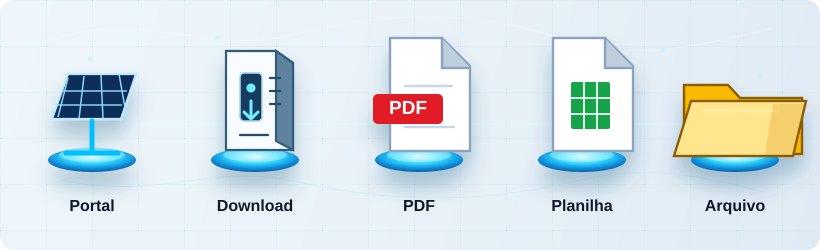

Portal e Execução
Pipeline
Máx. páginas:—
Máx. protocolos:—
Visualização do Processo

Portal
Download
PDF
Planilha
Arquivo
0%
Protocolos recentes
| Protocolo | Cliente | Excel | Arquivo | Status | |
|---|---|---|---|---|---|
| Nenhum protocolo recente encontrado. | |||||
Relatórios
Aguardando início da automação